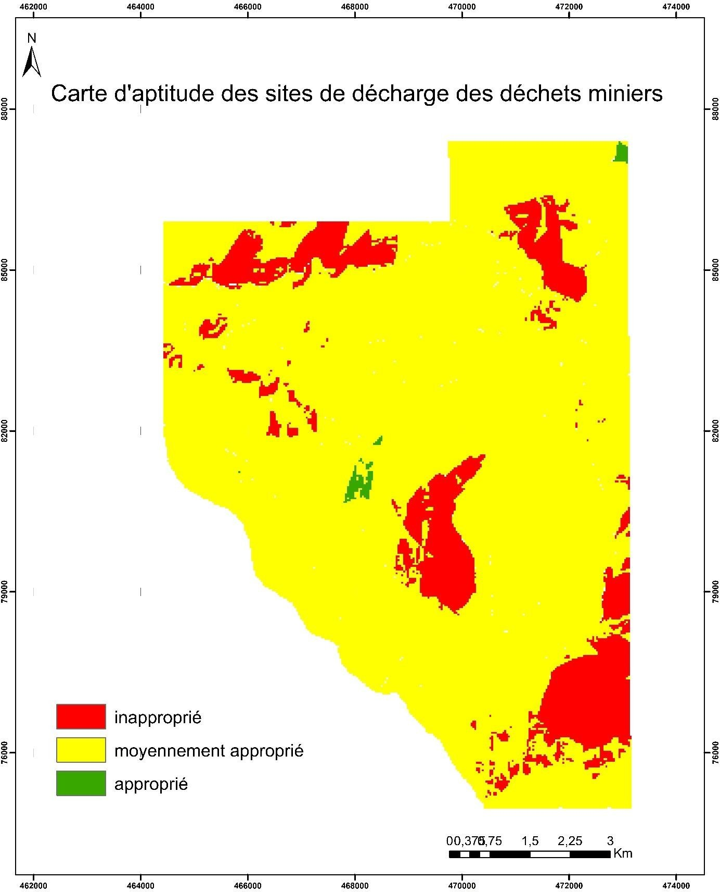

Academic Projects
Academic projects I completed during my studies
| Project | Objectives and Outcomes | |
|---|---|---|
| Master's Thesis: Application of GIS and remote sensing for studying the spatio temporal evolution of watermelon crops and its impacts on groundwater levels in the Feija plain, Zagora Province | - Monitor watermelon fields expansion using the Spectral Angle Mapper (SAM) classification method.
- Visualize the spatio-temporal variation of groundwater levels through interpolation methods. - Assess the impact of watermelon expansion on groundwater resources in the Feija aquifer. |
|
|  | Ideal Location for a Mining Waste Disposal Site Using GIS and the Analytical Hierarchy Process (AHP) - A Case Study of the Imiter Area, Morocco | This mini-project aims to select the best site for mining waste disposal in the Imiter area using the AHP (Analytic Hierarchy Process) for multi-criteria decision-making, considering technical, environmental, and social factors. |
 |
Assessment of the Vulnerability of the Berrechid Aquifer Using the DRASTIC Method | The main objective of this study is to assess the vulnerability of the aquifer using the DRASTIC model and the combination of hydrogeological data in GIS (Depth to water, Recharge, Aquifer media, Soil media, Topography, Impact of the vadose zone, and Hydraulic conductivity). |
 |
Web GIS Development | Design and implementation of a web GIS for spatial visualization of projects using PHP, Leaflet, PostGIS, and PostgreSQL. |
| Website Development | Creation of a responsive website using HTML, CSS, JavaScriptand Bootstrap. | |
| Bachelor's Thesis: Contribution of geophysical data to the study of the Tasiast area's structure (Western Réguibat Ridge, Mauritania) | - Analysis of airborne magnetic and radiometric geophysical data
- Creation of magnetic and radiometric maps - Mathematical processing of magnetic maps (pole reduction, analytic signal, vertical gradient) - Interpretation of the generated maps |
Please feel free to contact me at my email address or through my LinkedIn Account below.
maryamhbab2335@gmail.com